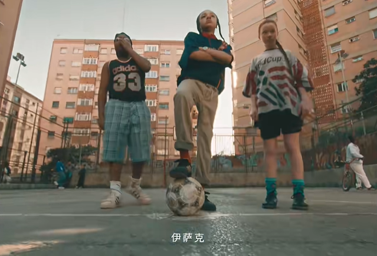
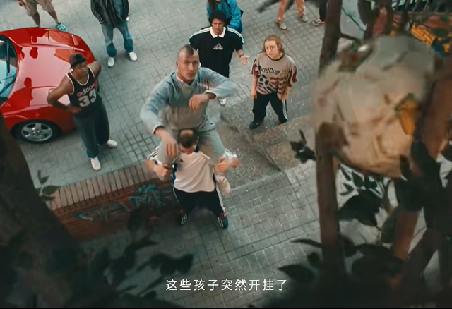
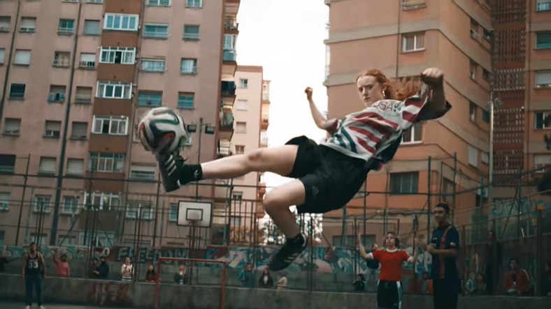
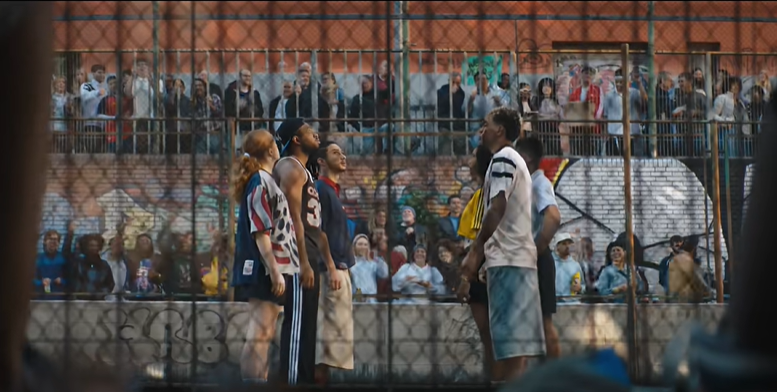
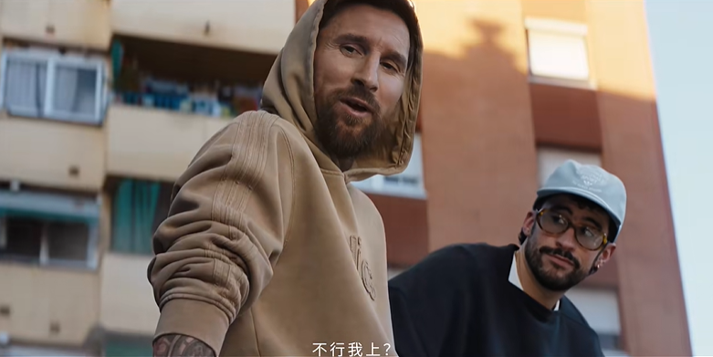
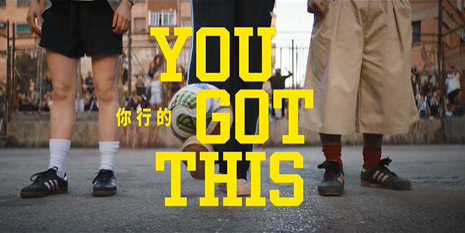

案例发生了什么






adidas 在 2026 世界杯周期推出《野场传说》。影片从甜茶临时组队出发，带观众进入一块公寓楼下的野球场：这里没有裁判、越位、VAR 或电视转播，只有“赢了留下，输了回家”。传说一支民间球队三十年从未输过，连齐达内、皮耶罗、贝克汉姆都曾来挑战。故事不断叠加脚后跟、凌空抽射、横梁反弹等夸张规则，最后把顶级世界杯、社区空地和两只书包搭成的球门收束到一句话——“有球的地方，就有球王”。
动作顺序：用甜茶作为好奇的外来者，让非核心球迷也能跟随他进入一段民间足球传说；不从世界杯宏大舞台开场，而从公寓楼下的空地、口述历史和胜者留场规则建立人人熟悉的野球文化；让齐达内、皮耶罗、贝克汉姆等传奇成为传闻中的失败挑战者，用巨星反衬普通野球队的神话地位；把“有球的地方，就有球王”接到品牌长期拥有的足球装备、球员与民间运动文化，而不是只做赛期口号。
营销启发卡
用三张卡片保留最值得记住、讨论和迁移的部分。 卡片底部按主题连接全站相关案例、经典方法与深度文章。
用甜茶作为好奇的外来者
用甜茶作为好奇的外来者，让非核心球迷也能跟随他进入一段民间足球传说；不从世界杯宏大舞台开场，而从公寓楼下的空地、口述历史和胜者留场规则建立人人熟悉的野球文化。
让甜茶、足球巨星与一支三十年不败的野球队共同讲述“足球属于每个球场
以“FIFA 官方合作 / 全球文化短片 / 民间足球”为资源起点，进入全球影片、球星社媒、零售陈列与产品内容；结果优先观察影片完成率、品牌搜索、产品页访问与重点市场销售，不把曝光直接等同于销售。
越拥有顶级赛事和巨星资源
越拥有顶级赛事和巨星资源，越可以把镜头交还给普通球场：用巨星证明文化高度，用社区故事证明品牌仍属于每一个踢球的人。
适用条件、风险与证据
- 需要明确权益能被调用的范围，而不是只记录赞助级别。
- 至少准备内容与商业两条承接线，防止资源只在比赛画面里出现。
- 复盘时区分赛事可见度、用户参与和实际业务结果，不能相互替代。
官方资料、结果数据与下一步
已验证事实
- adidas 官方项目页确认 Backyard Legends 将足球、音乐与电影人物放进同一个民间球场故事，主题是庆祝足球文化，而不是只展示职业比赛。
- 数英项目页保留了中文版《野场传说》的完整故事梳理和关键画面：甜茶临时组队，挑战一支据称三十年不败的社区野球队。
- 本页已归档 7 张来自项目页的真实影片画面，覆盖组队、野场规则、传说球星、挑战与收束文案。
可追溯的结果
- 当前公开页面未披露完整片播放量、完播率、社交二创、品牌搜索或商品转化；本页只确认创意、人物和执行画面，不虚构传播结果。
原始来源
来源链接优先指向品牌、权利方或持权媒体官方页面；品牌自述数据按原始定义记录，不视作独立审计结果。